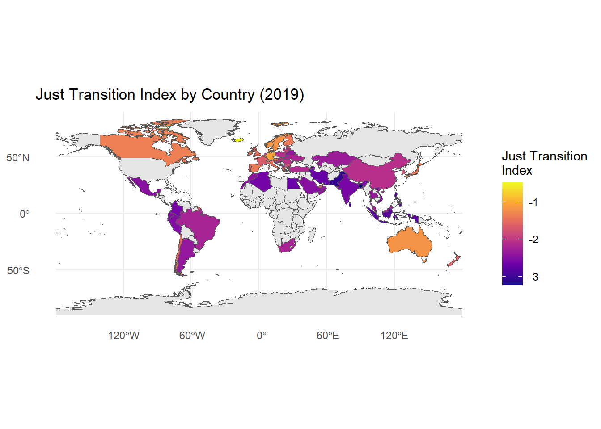
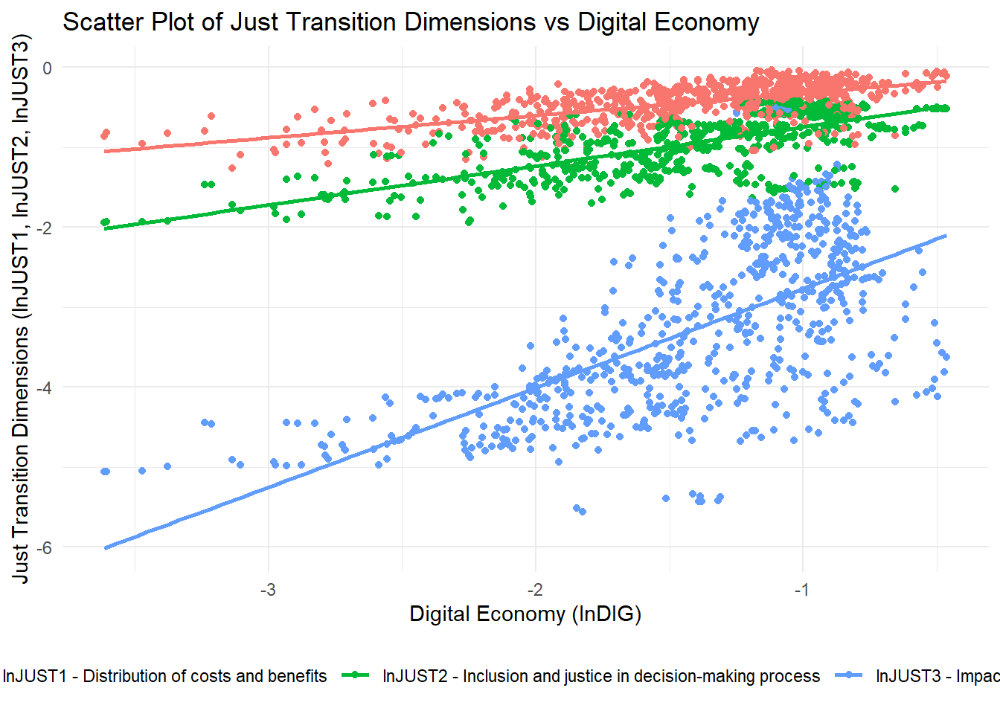
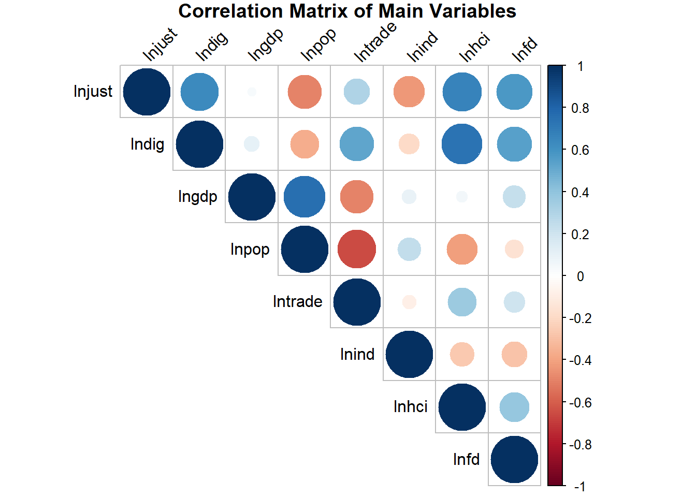

flowchart LR
X["Variável explicativa endógena (X)"]
Y["Variável dependente (Y)"]
Z["Variável instrumental (Z)"]
U["Erro não observado (U)"]
Z --> X
X --> Y
U --> X
U --> Y
style Z fill:#d4f1f9,stroke:#036,stroke-width:2px
style X fill:#f9f1d4,stroke:#630,stroke-width:2px
style Y fill:#e6f9d4,stroke:#060,stroke-width:2px
style U fill:#f9d4d4,stroke:#600,stroke-width:2px
Econometria System GMM
Replicação do paper “How does the digital economy accelerate global energy justice? Mechanism discussion and empirical test” em R
Objetivo principal do paper
investigar se a economia digital (tudo o que envolve internet, big data, inteligência artificial e tecnologias de comunicação) pode ajudar o mundo a fazer uma transição energética justa, ou seja, uma transição que leve em conta a distribuição equitativa dos benefícios e encargos associados à mudança para fontes de energia mais sustentáveis.
O Problema (A Transição Energética): O mundo precisa de deixar de usar energias fósseis (como o carvão e o petróleo) para combater as alterações climáticas e passar a usar energias limpas (como a solar ou a eólica)
A Dificuldade (A Necessidade de ser “Justa”): Esta mudança pode levar ao fecho de minas ou centrais elétricas, o que causa desemprego e prejudica certas regiões que dependiam dessas indústrias. Uma “transição justa” significa garantir que esta mudança é feita de forma equitativa, ajudando os trabalhadores e as comunidades afetadas, e distribuindo os benefícios e custos de forma justa
Questão central:
Será que a digitalização pode ajudar a tornar a transição mais justa?
Impacto Indireto A economia digital promove diretamente uma transição justa? Por exemplo, ao ajudar a criar novos “empregos verdes” ou ao permitir que as pessoas participem mais nas decisões?
Impacto nas diferentes “justiças: A “justiça” tem várias componentes. A economia digital afeta especificamente a justiça distributiva (distribuir custos e benefícios de forma justa), a justiça processual (dar voz a todos no processo) e a justiça restaurativa (ajudar quem perdeu o emprego a encontrar outro)
Os Mecanismos (O “Como?”): os autores testam se a digitalização ajuda a transição justa de forma indireta, através de dois canais principais:
- Através do aumento do Capital Humano: Ao dar às pessoas mais acesso a formação e novas competências
- Através do aumento do Desenvolvimento Financeiro: Ao facilitar o investimento e o fluxo de dinheiro para novas indústrias e para apoiar as comunidades.
Dados e Metodologia
- Painel de 72 países
- Período: 2010-2019
Metodologia
Modelo de painel dinâmico estimado através do System GMM. Um modelo de painel dinâmico é adequado porque a variável dependente (índice de transição energética justa) depende do seu próprio valor defasado, refletindo a natureza gradual e cumulativa da transição energética justa ao longo do tempo.
Esta escolha é justificada pela capacidade do SYS-GMM de lidar com a endogeneidade (resultante da causalidade dual e da inclusão da variável dependente desfasada) e melhorar a precisão da estimação em painéis dinâmicos
\[ lnJUST_{it} = \beta_0 + \beta_1 lnJUST_{i,t-1} + \beta_2 lnDIG_{it} + \sum \beta_k lnX_{it} + \epsilon_{it} \]
onde:
- \((lnJUST_{it}\): Índice de Transição Energética Justa para o país \((i)\) no tempo \((t)\)
- \((lnJUST_{i,t-1}\): Valor defasado do índice de transição energética justa
- \((lnDIG_{it}\): Nível de digitalização do país \((i)\) no tempo \((t)\)
- \((lnX_{it}\): Vetor de variáveis de controle (PIB, população, abertura comercial, estrutura industrial)
Para validar o modelo SYS-GMM, os autores recorrem aos testes padrão: o teste de Arellano-Bond (A-B) para autocorrelação (AR(1) e AR(2)) e o teste de Sargan para a validade das variáveis instrumentais
Comparação de GMM-Dif e GMM-Sys
| Característica | GMM-Diferenças (GMM-Dif) | GMM-Sistema (GMM-Sys) |
|---|---|---|
| Origem | Arellano & Bond (1991) | Blundell & Bond (1998) |
| Transformação | Primeiras diferenças para eliminar efeitos fixos | Sistema de equações: primeiras diferenças + níveis |
| Instrumentos | Variáveis defasadas em nível como instrumentos para equações em diferença | Acrescenta variáveis defasadas em diferença como instrumentos para equações em nível |
| Vantagem | Corrige endogeneidade dinâmica; evita viés de Nickell | Mais eficiente quando variáveis são persistentes; reduz viés de instrumentos fracos |
| Limitação | Instrumentos fracos se variáveis forem muito persistentes | Pode gerar excesso de instrumentos; exige hipótese adicional de ausência de correlação entre diferenças e efeitos fixos |
| Consistência | Requer ausência de autocorrelação de 2ª ordem nos erros | Idem, mas também requer validade dos instrumentos adicionais em nível |
| Testes usuais | AR(1), AR(2), Hansen/Sargan | AR(1), AR(2), Hansen/Sargan (atenção ao nº de instrumentos) |
| Uso típico | Painéis com T pequeno e N grande, variáveis não muito persistentes | Painéis com T pequeno e N grande, variáveis altamente persistentes |
| Implementação em R | plm::pgmm(..., transformation = "d") |
plm::pgmm(..., transformation = "ld") |
Variáveis Instrumentais
- O que é uma variável instrumental?
Um variável instrumental é uma variável que está correlacionada com a variável explicativa endógena (X), mas não está correlacionada com o erro não observado (U) na equação de regressão. Isto permite isolar a variação exógena em X para obter estimativas consistentes do efeito de X sobre Y.
Como funciona:
Utilizamos o instrumento (Z) para prever a variável endógena (X).
Usamos a variação prevista de X (que é exógena) para estimar o efeito de X sobre Y.
Este método é amplamente utilizado em econometria para lidar com problemas de endogeneidade, onde a variável explicativa está correlacionada com o termo de erro, o que pode levar a estimativas viesadas e inconsistentes. É conhecido com 2SLS (Two-Stage Least Squares) quando aplicado em modelos lineares simples.
- O que é um instrumento fraco? Um instrumento é considerado fraco quando está fracamente correlacionado com a variável endógena que se pretende instrumentar. Isto pode levar a estimativas viesadas e inconsistentes, especialmente em amostras pequenas.
O que é o método dos momentos generalizados (GMM)?
O método dos momentos generalizados (GMM) é uma técnica de estimação estatística que utiliza momentos (como médias e variâncias) derivados dos dados para estimar os parâmetros de um modelo. É especialmente útil quando as suposições tradicionais de modelos lineares, como a normalidade dos erros, não são verificados.
Dados
O índice JUST baseia-se no quadro de McCauley e Heffron (2018) e agrega 21 indicadores em três subíndices: justiça distributiva, justiça processual e justiça restaurativa.
O índice DIG é composto por quatro dimensões: infraestrutura, impacto social, comércio digital e apoio social.
Para testar as hipóteses de como a economia digital afeta a transição justa (ou seja, os efeitos indiretos), o estudo aplica um modelo de efeito de mediação. esta especificamente o capital humano (\(lnHCI\)) e o desenvolvimento financeiro (\(lnFD\)) como variáveis mediadoras.
A significância dos efeitos de mediação é confirmada através do teste de Sobel.
| Variáveis | Definição | Unidades |
|---|---|---|
| lnJUST | Just transition | – |
| lnDIG | Digital economy | – |
| lnGDP | GDP | Constant 2015 US dollar |
| lnPOP | Population | people |
| lnTRADE | Imports and exports of goods and services | % of GDP |
| lnIND | Ratio of value added by secondary industry to GDP | % of GDP |
| lnHCI | Years of education and return on education | – |
| lnFD | Domestic credit to the private sector | % of GDP |
Resultados principais
Carregar bibliotecas
library(tidyverse)
library(plm)
library(readxl)
library(haven)
library(gtsummary)
library(modelsummary)
library(sf)
library(rnaturalearth)
library(rnaturalearthdata)
library(corrplot)
library(sandwich)
library(lmtest)
library(plm)
library(mediation)
library(gganimate)
library(ggblend)
library(gifski)Importar ficheiro .dta
data <- read_dta("data.dta")
#converter painel
pdata <- pdata.frame(data, index = c("country", "year"))Ver algumas dimensões dos dados
pdim(pdata)Balanced Panel: n = 72, T = 10, N = 72072 países ao longo de 10 anos (2010-2019), totalizando 720 observações.
Calcular a estatísticas descritivas
# Calcular estatísticas descritivas Obs, Média, Desvio Padrão, Mínimo, Máximo
pdata %>%
as.data.frame() %>%
dplyr::select(lnjust, lndig, lngdp, lnpop, lntrade, lnind, lnhci, lnfd) %>%
tbl_summary(
statistic = list(
all_continuous() ~ c("{mean} ({sd}) [{min}, {max}]")
),
digits = all_continuous() ~ 2,
label = list(
lnjust ~ "Just transition",
lndig ~ "Digital economy",
lngdp ~ "GDP",
lnpop ~ "Population",
lntrade ~ "Trade",
lnind ~ "Industry",
lnhci ~ "Human capital",
lnfd ~ "Financial development"
)
) %>%
modify_header(label ~ "**Variable**", stat_0 ~ "**Mean (SD) [Min, Max]**") %>%
as_gt()| Variable | Mean (SD) [Min, Max]1 |
|---|---|
| Just transition | -2.15 (0.53) [-3.25, -0.44] |
| Digital economy | -1.41 (0.54) [-3.61, -0.46] |
| GDP | 26.40 (1.48) [22.91, 30.63] |
| Population | 16.81 (1.66) [12.67, 21.07] |
| Trade | 4.38 (0.56) [3.11, 5.94] |
| Industry | 3.30 (0.35) [2.30, 4.31] |
| Human capital | 1.09 (0.18) [0.56, 1.47] |
| Unknown | 40 |
| Financial development | 4.22 (0.62) [2.54, 5.54] |
| Unknown | 44 |
| 1 Mean (SD) [Min, Max] | |
Criar um mapa com os países country e com a variável lnjust para o ano de 2019
# Filtrar dados para 2019
data_2019 <- pdata %>%
filter(year == 2019) %>%
dplyr::select(country, lnjust)
# Obter mapa do mundo
world <- ne_countries(scale = "medium", returnclass = "sf")
# Juntar dados
map_data <- world %>%
left_join(data_2019, by = c("name" = "country"))
# Criar mapa
ggplot(map_data) +
geom_sf(aes(fill = lnjust)) +
scale_fill_viridis_c(option = "plasma", na.value = "grey90") +
theme_minimal() +
labs(title = "Just Transition Index by Country (2019)",
fill = "Just Transition\nIndex")
Gráfico de dispersão para as 3 dimensões do índice de transição energética.
lnjust1- distribuição de custos e benefícios.lnjust2- inclusão e justiça do processo de tomada de decisãolnjust3- impacto nas pessoas e na reparação
# Gráfico de dispersão para as 3 dimens
pdata %>%
dplyr::select(lnjust1, lnjust2, lnjust3, lndig) %>%
pivot_longer(cols = starts_with("lnjust"), names_to = "dimension", values_to = "value") %>%
ggplot(aes(x = lndig, y = value, color = dimension)) +
geom_point(alpha = 5.5) +
geom_smooth(method = "lm", se = FALSE) +
labs(title = "Scatter Plot of Just Transition Dimensions vs Digital Economy",
x = "Digital Economy (lnDIG)",
y = "Just Transition Dimensions (lnJUST1, lnJUST2, lnJUST3)") +
theme_minimal() +
theme(legend.position = "bottom") +
scale_color_discrete(name = "Dimension",
labels = c("lnJUST1 - Distribution of costs and benefits",
"lnJUST2 - Inclusion and justice in decision-making process",
"lnJUST3 - Impact on people and remediation"))`geom_smooth()` using formula = 'y ~ x'
Criar um gráfico de dispersão dos países ao longo do tempo entre lnjust e lndig com gganimate e ggblend.
# Criar gráfico de dispersão animado
animated_scatter <- data %>%
as.data.frame() %>%
mutate(year = as.integer(as.character(year))) %>%
ggplot(aes(x = lndig, y = lnjust, color = country)) +
geom_point(size = 4, alpha = 0.8) +
ggrepel::geom_text_repel(aes(label = country),
size = 3,
show.legend = FALSE,
max.overlaps = 80,
segment.size = 0.2) +
labs(title = "Just Transition vs Digital Economy - Year: {frame_time}",
x = "Digital Economy (lnDIG)",
y = "Just Transition (lnJUST)") +
transition_time(year) +
theme_minimal() +
theme(legend.position = "none")
animated_scatter
Gráfico das correlações entre as variáveis principais
# Selecionar variáveis principais
main_vars <- pdata %>%
dplyr::select(lnjust, lndig, lngdp, lnpop, lntrade, lnind, lnhci, lnfd)
# Gráfico de correlação
cor_matrix <- cor(main_vars, use = "complete.obs")
corrplot(cor_matrix, method = "circle", type = "upper",
tl.col = "black", tl.srt = 45,
title = "Correlation Matrix of Main Variables",
mar = c(0,0,1,0))
Testas de Especificação de Modelo
Teste de Autocorrelação de painel
# Estimar modelo preliminar para obter resíduos
prelim_model <- plm(lnjust ~ lag(lnjust, 1) + lndig + lngdp + lnpop + lntrade + lnind,
data = pdata, model = "pooling")
# Estimar modelo within para o teste BC-LM
prelim_model_within <- plm(lnjust ~ lag(lnjust, 1) + lndig + lngdp + lnpop + lntrade + lnind,
data = pdata, model = "within")
# Teste de Arellano-Bond para autocorrelação
ab_test <- pbgtest(prelim_model)
ab_test
Breusch-Godfrey/Wooldridge test for serial correlation in panel models
data: lnjust ~ lag(lnjust, 1) + lndig + lngdp + lnpop + lntrade + lnind
chisq = 23.311, df = 9, p-value = 0.005534
alternative hypothesis: serial correlation in idiosyncratic errors- H0: Não há autocorrelação nos resíduos do painel
Testar heteroscedasticidade
# Teste de Breusch-Pagan para heteroscedasticidade
bp_test <- bptest(prelim_model)
bp_test
studentized Breusch-Pagan test
data: prelim_model
BP = 6.8161, df = 6, p-value = 0.3382- H0: Homoscedasticidade (variância constante dos erros)
Testar a existência de cross-sectional dependence às variáveis
Comparação dos Testes de Dependência Cross-Section
| Teste | Autores / Ano | Hipótese Nula (H0) | Contexto típico de uso | Vantagens | Limitações |
|---|---|---|---|---|---|
| LM de Breusch–Pagan | Breusch & Pagan (1980) | Não há dependência cross-section | Painéis com T grande e N fixo | Simples de calcular; baseado em resíduos | Pode inflar tamanho do teste quando N cresce |
| LM ajustado (Pesaran CDLM) | Pesaran (2004) | Não há dependência cross-section | Painéis com N grande e T pequeno | Corrige viés do LM clássico | Menos eficiente se T for grande |
| CD de Pesaran | Pesaran (2004) | Não há dependência cross-section | Painéis com N grande, T pequeno | Muito usado em economia aplicada; robusto | Pode perder potência se T for muito pequeno |
Teste de Pesaran para dependência cross-sectional
cd_test_BP <- pcdtest(prelim_model, test = "lm")
cd_test_LM_adj <- pcdtest(prelim_model, test = "sclm")
cd_test_CD <- pcdtest(prelim_model, test = "cd")
#creat a table with the results
data.frame(
Test = c("Breusch-Pagan LM", "Pesaran CDLM Adjusted", "Pesaran CD"),
Statistic = c(cd_test_BP$statistic, cd_test_LM_adj$statistic, cd_test_CD$statistic),
p_value = c(cd_test_BP$p.value, cd_test_LM_adj$p.value, cd_test_CD$p.value)
) Test Statistic p_value
1 Breusch-Pagan LM 3214.656480 7.245456e-18
2 Pesaran CDLM Adjusted 9.212204 3.194962e-20
3 Pesaran CD 4.474668 7.653027e-06Estimar o modelo de Benchmark
Ols pooled
ols_pooled <- plm(lnjust ~ lag(lnjust, 1) + lndig + lngdp + lnpop + lntrade + lnind,
data = pdata, model = "pooling")
# Estimar FGLS
ols_fgls <- plm(lnjust ~ lag(lnjust, 1) + lndig + lngdp + lnpop + lntrade + lnind,
data = pdata, model = "random", random.method = "swar")
#Estimar o SYS-GMM
# Estimar o modelo SYS-GMM
sys_gmm <- pgmm(lnjust ~ lag(lnjust, 1) + lndig + lngdp + lnpop + lntrade + lnind | lag(lnjust, 2:99),
data = pdata, effect = "individual", model = "twosteps")
# Resumo de todos os modelos
library(modelsummary)
# Resumo de todos os modelos
modelsummary(list("OLS Pooled" = ols_pooled,
"FGLS" = ols_fgls,
"SYS-GMM" = sys_gmm),
stars = TRUE,
gof_map = c("nobs", "r.squared", "adj.r.squared"),
add_rows = data.frame(
term = c("Sargan test (p-value)", "AR(1) test (p-value)", "AR(2) test (p-value)"),
"OLS Pooled" = c("", "", ""),
"FGLS" = c("", "", ""),
"SYS-GMM" = c(
sprintf("%.3f", summary(sys_gmm)$sargan$p.value),
sprintf("%.3f", summary(sys_gmm)$m1$p.value),
sprintf("%.3f", summary(sys_gmm)$m2$p.value)
)
))Warning: `modelsummary could not extract goodness-of-fit statistics from a model
of class "pgmm". The package tried a sequence of 2 helper functions:
performance::model_performance(model)
broom::glance(model)
One of these functions must return a one-row `data.frame`. The `modelsummary` website explains how to summarize unsupported models or add support for new models yourself:
https://modelsummary.com/articles/modelsummary.html| OLS Pooled | FGLS | SYS-GMM | |
|---|---|---|---|
| + p < 0.1, * p < 0.05, ** p < 0.01, *** p < 0.001 | |||
| (Intercept) | -0.185+ | -0.185+ | |
| (0.100) | (0.100) | ||
| lag(lnjust, 1) | 0.972*** | 0.972*** | 0.814*** |
| (0.010) | (0.010) | (0.029) | |
| lndig | 0.014+ | 0.014+ | -0.047+ |
| (0.008) | (0.008) | (0.024) | |
| lngdp | 0.016*** | 0.016*** | 0.213*** |
| (0.005) | (0.005) | (0.055) | |
| lnpop | -0.011* | -0.011* | 0.221** |
| (0.005) | (0.005) | (0.081) | |
| lntrade | 0.000 | 0.000 | 0.098*** |
| (0.007) | (0.007) | (0.025) | |
| lnind | -0.017+ | -0.017+ | -0.048+ |
| (0.009) | (0.009) | (0.028) | |
| Num.Obs. | 648 | 648 | |
| R2 | 0.985 | 0.985 | |
| R2 Adj. | 0.985 | 0.985 | |
| Sargan test (p-value) | 0.066 | ||
| AR(1) test (p-value) | 0.000 | ||
| AR(2) test (p-value) | 0.324 | ||
H0 do teste de Sargan: As variáveis instrumentais são válidas.
H0 do teste AR(1): Existe autocorrelação de primeira ordem nos resíduos.
H0 do teste AR(2): Existe autocorrelação de segunda ordem nos resíduos.
# Estimar o modelo SYS-GMM para cada dimensão de transição justa
sys_gmm_just1 <- pgmm(lnjust1 ~ lag(lnjust1, 1) + lndig + lngdp + lnpop + lntrade + lnind |
lag(lnjust1, 2:4),
data = pdata,
effect = "twoways",
model = "twosteps",
transformation = "ld")
sys_gmm_just2 <- pgmm(lnjust2 ~ lag(lnjust2, 1) + lndig + lngdp + lnpop + lntrade + lnind |
lag(lnjust2, 2:4),
data = pdata,
effect = "twoways",
model = "twosteps",
transformation = "ld")
sys_gmm_just3 <- pgmm(lnjust3 ~ lag(lnjust3, 1) + lndig + lngdp + lnpop + lntrade + lnind |
lag(lnjust3, 2:4),
data = pdata,
effect = "twoways",
model = "twosteps",
transformation = "ld")
# Criar tabela comparativa com todos os modelos
modelsummary(list("Distributive Justice" = sys_gmm_just1,
"Procedural Justice" = sys_gmm_just2,
"Restorative Justice" = sys_gmm_just3),
stars = TRUE,
gof_map = c("nobs"),
add_rows = data.frame(
term = c("Sargan test (p-value)", "AR(1) test (p-value)", "AR(2) test (p-value)"),
"Distributive Justice" = c(
sprintf("%.3f", summary(sys_gmm_just1)$sargan$p.value),
sprintf("%.3f", summary(sys_gmm_just1)$m1$p.value),
sprintf("%.3f", summary(sys_gmm_just1)$m2$p.value)
),
"Procedural Justice" = c(
sprintf("%.3f", summary(sys_gmm_just2)$sargan$p.value),
sprintf("%.3f", summary(sys_gmm_just2)$m1$p.value),
sprintf("%.3f", summary(sys_gmm_just2)$m2$p.value)
),
"Restorative Justice" = c(
sprintf("%.3f", summary(sys_gmm_just3)$sargan$p.value),
sprintf("%.3f", summary(sys_gmm_just3)$m1$p.value),
sprintf("%.3f", summary(sys_gmm_just3)$m2$p.value)
)
))Warning: `modelsummary could not extract goodness-of-fit statistics from a model
of class "pgmm". The package tried a sequence of 2 helper functions:
performance::model_performance(model)
broom::glance(model)
One of these functions must return a one-row `data.frame`. The `modelsummary` website explains how to summarize unsupported models or add support for new models yourself:
https://modelsummary.com/articles/modelsummary.html
Warning: `modelsummary could not extract goodness-of-fit statistics from a model
of class "pgmm". The package tried a sequence of 2 helper functions:
performance::model_performance(model)
broom::glance(model)
One of these functions must return a one-row `data.frame`. The `modelsummary` website explains how to summarize unsupported models or add support for new models yourself:
https://modelsummary.com/articles/modelsummary.html
Warning: `modelsummary could not extract goodness-of-fit statistics from a model
of class "pgmm". The package tried a sequence of 2 helper functions:
performance::model_performance(model)
broom::glance(model)
One of these functions must return a one-row `data.frame`. The `modelsummary` website explains how to summarize unsupported models or add support for new models yourself:
https://modelsummary.com/articles/modelsummary.html| Distributive Justice | Procedural Justice | Restorative Justice | |
|---|---|---|---|
| + p < 0.1, * p < 0.05, ** p < 0.01, *** p < 0.001 | |||
| lag(lnjust1, 1) | 0.007 | ||
| (0.038) | |||
| lndig | 0.133*** | 0.010** | 0.053*** |
| (0.027) | (0.003) | (0.014) | |
| lngdp | 0.046** | 0.003 | -0.029*** |
| (0.014) | (0.003) | (0.006) | |
| lnpop | -0.101*** | -0.005 | 0.044*** |
| (0.014) | (0.003) | (0.007) | |
| lntrade | 0.012 | -0.004 | 0.021 |
| (0.013) | (0.003) | (0.013) | |
| lnind | -0.009 | 0.006 | 0.006 |
| (0.022) | (0.005) | (0.017) | |
| lag(lnjust2, 1) | 0.966*** | ||
| (0.016) | |||
| lag(lnjust3, 1) | 1.040*** | ||
| (0.011) | |||
| Sargan test (p-value) | 0.179 | 0.176 | 0.042 |
| AR(1) test (p-value) | 0.000 | 0.000 | 0.000 |
| AR(2) test (p-value) | 0.835 | 0.854 | 0.262 |
# Mediation analysis: Digital Economy -> Human Capital -> Just Transition
# Create a complete dataset for mediation analysis
pdata_mediation <- pdata %>%
mutate(lnjust_lag = lag(lnjust, 1)) %>%
as.data.frame() %>%
dplyr::select(country, lnjust, lnjust_lag, lndig, lnhci, lngdp, lnpop, lntrade, lnind) %>%
na.omit()
# Step 1: Effect of Digital Economy on Human Capital
model_mediator_hci <- lm(lnhci ~ lndig + lngdp + lnpop + lntrade + lnind,
data = pdata_mediation)
# Step 2: Effect of Human Capital on Just Transition (controlling for Digital Economy)
model_outcome_hci <- lm(lnjust ~ lnjust_lag + lndig + lnhci + lngdp + lnpop + lntrade + lnind,
data = pdata_mediation)
# Mediation analysis
mediation_hci <- mediation::mediate(model_mediator_hci, model_outcome_hci,
treat = "lndig", mediator = "lnhci",
boot = TRUE, sims = 500)Running nonparametric bootstrapsummary(mediation_hci)
Causal Mediation Analysis
Nonparametric Bootstrap Confidence Intervals with the Percentile Method
Estimate 95% CI Lower 95% CI Upper p-value
ACME 0.0000e+00 -1.0848e-16 1.1000e-16 1.000
ADE -1.6327e-18 -8.9144e-17 8.9144e-17 0.468
Total Effect -1.6327e-18 -1.1638e-16 1.1813e-16 0.744
Prop. Mediated 0.0000e+00 -1.1608e+00 1.4507e+00 1.000
Sample Size Used: 680
Simulations: 500